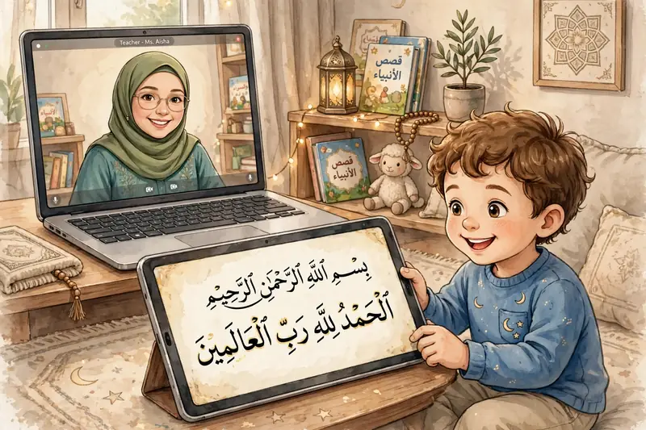
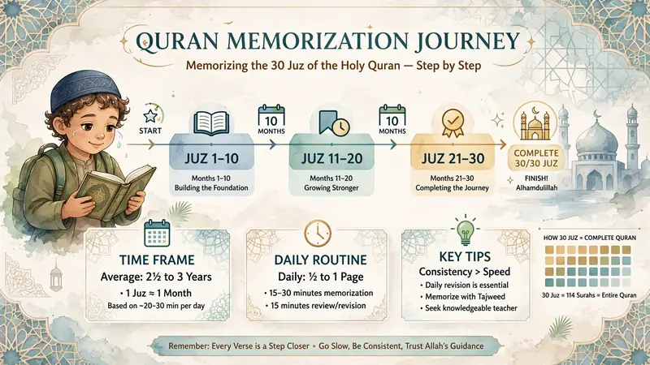

Quran Hifz
How to Memorize the Quran Online: A Step-by-Step Guide for Beginners
Learn how to memorize the Quran online with a simple Hifz routine, effective revision techniques and guidance from qualified Quran teachers.
Read the Guide →Practical Quran learning guides for Muslim parents in USA, UK & Canada to help children and adults improve Quran reading, Tajweed and memorization.
Learn how to memorize the Quran online with a simple Hifz routine, effective revision techniques and guidance from qualified Quran teachers.
Read the Guide →
Follow a simple one-year plan to memorize Juz Amma with regular revision, Tajweed, teacher guidance and weekly assessment.
Read the Guide →
Learn what parents should look for when choosing an online Quran teacher, including Tajweed, teaching experience, communication and flexible scheduling.
Read the Guide →
Discover what affects Quran memorization time and how to build a realistic routine with daily practice, teacher guidance and regular revision.
Read the Guide →Learn practical ways to keep your child motivated to learn Quran online, build a consistent routine and make steady progress without pressure.
Read the Guide →Learn how to balance Quran memorization with school studies using a realistic routine, effective revision and simple time management tips.
Read the Guide →Learn how parents can help children memorize the Quran with a simple routine, effective revision and realistic goals.
Read the Guide →
Discover practical ways to help your child learn Quran at home with a simple routine, effective practice and positive encouragement.
Read the Guide →
Find out how much time children should spend learning Quran each day and how to create a realistic routine alongside school and family life.
Read the Guide →Book a free trial lesson and discover a learning plan that fits your goals and schedule.
Book Your Free Trial